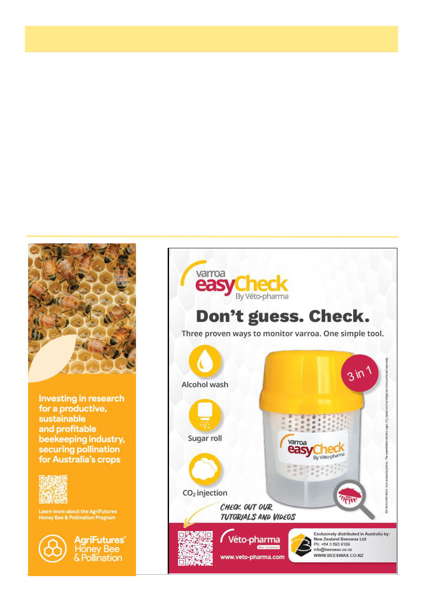

July 2026
19
Beekeeping In Cuba, cont’d
Since 1996, the chemical product Bayvarol has
been used in Cuba, maintaining a control efficacy of
over 98% to date, with no residues detected in 134
honey samples analyzed by the Chemical Residue
Monitoring Plan in 2000 and 2001 (Cuba, 2001b,c).
The possibility of alternating chemical treatments
with essential oils, organic acids or hormonal sub-
stances, of more variable effectiveness but less con-
taminating, they are necessary options while waiting
for varroa-tolerant bees.
Cuba's planned Control Program bases its strate-
gy on integrated pest management, with the short-
term goal of using only organic substances. In
countries such as the United States, the sole regis-
tration of Apistan made the development of chemical
resistance foreseeable (Sanford, 1993), which was
found to be widespread years later (Eischen et al.
1998) and resulted in the lost opportunity to ration-
ally alternate pyrethroids with organic treatments.
The above is from the introduction for a study on
using the thymol product Apilife Var. The study was
performed in 1998, at which point the Varroa-positive
hives along the coast had all been treated previously
with Bayvarol and the inland hives had only just recent-
ly gotten Varroa and not previously been treated. In the
first field roll-out of Apilife Var, nearly 80% of the
hives were killed outright, and it’s unclear what went
wrong (an initial average infestation rate of 22%
(equivalent to alc wash of 66), may have already been
too high), but a second roll-out was more successful
with no colony losses and good control achieved, and
the study ended up recommending the use of the prod-
uct either as the sole treatment or in rotation with syn-
thetics.13
In another paper published in 2001, researchers at
the Apicultural Experimental Station in Havana looked
at mats from 41 hives that had been collected daily for
one week, during which 2099 mites had fallen (7.3
(Continued from page 18)
(Continued on page 20)